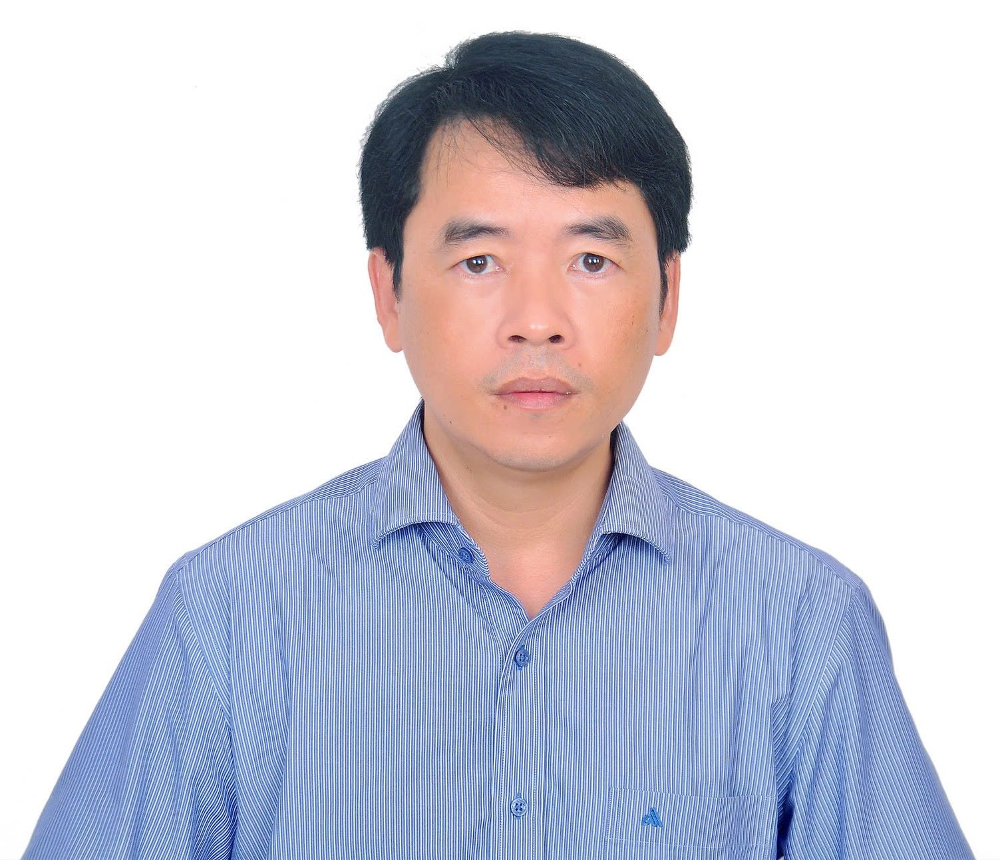

Welcome to APPF 2027
The 10th Asian Pacific Phycological Forum (APPF 2027) will be held in Ho Chi Minh City, Vietnam, from May 10 - 14, 2027 by the Institute of Life Sciences (ILS) of the Vietnam Academy of Science and Technology (VAST). The ILS has a long history of work in algal biology research. The theme of the APPF 2027 forum will be "Algae: Ecology, Biodiversity, Biotechnology and Economic Perspectives in the Context of Climate Change and Sustainability".
Ho Chi Minh City (HCMC), formerly known as Saigon, is the largest city and the economic heart of Vietnam. Located in the south Vietnam, the city serves as a bustling hub with quick access to both Vietnam's central coast and the fertile Mekong Delta. A popular tourist destination, it's known for its vibrant, open, and diverse culture, blending historical landmarks with modern energy.
We warmly invite you to attend the APPF 2027 and look forward to your presentations.
Sincerely,

Assoc. Prof. Dr. Nguyen Van Tu
Chair
Local Organizing Committee
10th Asian Pacific Phycological Forum
(APPF 2027)
About APPF 2027
| Conference Name: | The 10th Asian Pacific Phycological Forum |
| Theme: | Algae: Ecology, Biodiversity, Biotechnology and Economic Perspectives in the Context of Climate Change and Sustainability |
| Organizer: | APPF2027 Local Organizing Committee |
| Conference Chair: | Assoc. Prof. Dr. Nguyen Van Tu (Institute of Life Sciences) nvtu.itb@gmail.com |
| Secretariat Office: | ILS campus in District 3, HCMC 85 Tran Quoc Toan Str., Xuan Hoa Ward, Ho Chi Minh City, Vietnam E-mail: appf2027vn@gmail.com Tel +84-xx-xxx-xxxx |
The APPF 2027 will be held in person.
Forum Dates: May 10-14, 2027
- 10th (Mon, Afternoon): Registration, Welcome reception, Icebreaker
- 11th (Tue): Registration, Opening ceremony, Conference sessions
- 12th (Wed): Conference sessions & poster presentations
- 13th (Thu): Conference sessions, Closing ceremony & banquet dinner
- 14th (Fri): Excursions and Tours (optional)
Venue
T78 meeting complex, District 3, Ho Chi Minh City, Vietnam.
Address: 145 Ly Chinh Thang Street, Xuan Hoa Ward, Ho Chi Minh City, Vietnam
Main Theme:
“Algae: Ecology, Biodiversity, Biotechnology and Economic Perspectives in the Context of Climate Change and Sustainability”
Sub-Themes:
- Algae Ecology, Biodiversity and Genetics in a Changing Climate.
- Algae Conservation, Culture, and Advanced Cultivation Systems.
- Algae for a Sustainable Future: Food, Bioremediation and Bioproducts.
Call for Papers
| - Deadline to submit: | ???June 2026 |
| - Scientific committee to review the abstract: | ???July - August 2026 |
| - Deadline for Acceptance Notification (Poster and Oral): | ???September 2026 |
Guidelines for Oral presentations, Poster presentation, Abstract template, and Notice of Abstract Acceptance will be announced later.
Registration
Registration Period
Early Bird Registration: August 1st 2026 to November 1st 2026 (5:00 pm, ICT=UTC+7)
Standard Registration: November 2nd 2026 to March 2nd 2027 (5:00 pm, ICT)
Registration Fee
| Category | Early Bird Registration | Standard Registration |
|---|---|---|
| Full delegates | 450 USD | 500 USD |
| Student | 200 USD | 250 USD |
| Accompanying person | 150 USD | 200 USD |
- The full delegate and student fees cover an abstract book, a congress bag, and admission to the opening and closing ceremonies. The fee also includes access to all scientific sessions, the welcoming reception and ice breaker (on the evening of Day 1), the conference banquet (on Day 4, after the closing ceremony), and all tea breaks and lunches during the conference.
NOTE: Congress bags will not be handed out to accompanying persons. - Students are requested to send the copy of student ID card (scanned PDF or photograph of the card) to the congress organizer by e-mail (appf2027vn@gmail.com).
- Accompanying persons should be your family members, not your colleagues.
Accompanying persons fee includes: participation to coffee break and social events. - A Warm Welcome to Our Vietnamese Colleagues
The 10th APPF represents a historic milestone as we proudly host this conference in Vietnam for the very first time. The Organizing Committee has established a fund to provide a special registration fee, aimed at encouraging the maximum possible participation from local Vietnamese.
We look forward to welcoming you to this significant event. Please contact us at appf2027vn@gmail.com for guidance on how to access this special rate.
Way to registration: Registration is available online with payment must be made in USD for international participants and in VND for Vietnamese participants by bank transfer or credit card.
Draft Programme (Tentative)
Tentative Draft Programme:
- Day 1 (Afternoon): Registration, Welcome reception
- Day 2: Registration, Conference plenary & sessions
- Day 3: Conference sessions & poster presentations
- Day 4: Conference sessions, Closing ceremony & banquet dinner
- Day 5: Excursions and tours (optional)
Tentative special sections on Asian Pacific Phycological Forum 30th Year Anniversary:
- Special session on the review of past achievements in algal research in the Asian Pacific Region and the APPA/APPFs, and the way forward.
- Special session on young phycologists.
- Job for young phycologists.
- Honors to eminent phycologists from our region.
Organizing Committee
The 10th Asian Pacific Phycological Forum (APPF 2027) is organized by Asian Pacific Phycological Association (APPA ) in association with the Institute of Life Sciences-Vietnam Academy of Science and Technology (ILS-VAST)
The Asian Pacific Phycological Association
The Asian Pacific Phycological Association (APPA) is formed to advance phycology in the Asian Pacific region, to serve as the venue for the exchange of information related to phycology, and to promote international cooperation among phycologists and phycological societies in the Asia-Pacific region.
Membership
All individuals who attend the Asian Pacific Phycological Forum are automatically Members of the APPA for a period of six years after conference registration. Membership fees are included in the Registration Fee of the APPF, and no further payment is required from members. For more details, please visit APPA website.
| President | Professor Jeong Ha Kim (Korea) |
| Vice President | Professor Phaik Eem Lim (Malaysia) |
| Secretary | Assoc. Prof. Dr. Jaruwan Mayakun (Thailand) |
| Treasurer | Professor Ryuta Terada (Japan) |
Membership of Local Organizing Committee
| No. | Members | Organizations |
| 1 | Assoc. Prof. Nguyen Van Tu (Chair of LOC) | Institute of Life Sciences, VAST |
| 2 | MSc. Nguyen Xuan Vinh (General Secretary) | Institute of Life Sciences, VAST |
| 3 | Prof. Dr. Dang Diem Hong | Institute of Biotechnology, VAST |
| 4 | Prof. Dr. Hoang Nghia Son | Institute of Life Sciences, VAST |
| 5 | Prof. Dr. Tran Ngoc Hai | Can Tho University |
| 6 | Assoc.Prof. Nguyen Thi Ngoc Anh | Can Tho University |
| 7 | Assoc.Prof. Trinh Dang Mau | Danang University of Science and Education |
| 8 | Assoc.Prof. Dao Thanh Son | Ho Chi Minh City University of Technology |
| 9 | Assoc.Prof. Bui Xuan Thanh | Ho Chi Minh City University of Technology |
| 10 | Prof. Dr. Nguyen Ngoc Lam | Institute of Oceanography, VAST |
| 11 | Prof. Dr. Doan Nhu Hai | Institute of Oceanography, VAST |
| 12 | Dr. Nguyen Xuan Vy | Institute of Oceanography, VAST |
| 13 | Dr. Ngo Thi Hoai Thu | Institute of Biotechnology, VAST |
| 14 | Dr. Nguyen Cam Ha | Institute of Biotechnology, VAST |
| 15 | Le Thi Thom | Institute of Biotechnology, VAST |
| 16 | Assoc. Prof. Pham Duc Thinh | Nha Trang Institute of Technology Research and Application, VAST |
| 17 | Dr. Le Dinh Hung | Nha Trang Institute of Technology Research and Application, VAST |
| 18 | Assoc. Prof. Dam Duc Tien | Institute of Marine Environment and Resources, VAST |
| 19 | Dr. Chu Van Thuoc | Institute of Marine Environment and Resources, VAST |
| 20 | Dr. Nguyen Van Nguyen | Research Institute for Marine Fisheries |
| 21 | Dr. Le Thanh Tung | Research Institute for Marine Fisheries |
| 22 | Assoc. Prof. Duong Thi Thuy | Institute of Energy and Environmental Science & Technology, VAST |
| 23 | Assoc. Prof. Nguyen Duc Bach | Vietnam National University of Agriculture |
| 24 | Assoc. Prof. Ngo Xuan Quang | Institute of Life Sciences, VAST |
| 25 | Assoc. Prof. Dang Van Son | Institute of Life Sciences, VAST |
| 26 | Dr. Nguyen Tran Vy | Institute of Life Sciences, VAST |
| 27 | Dr. Le Thanh Long | Institute of Life Sciences, VAST |
| 28 | Dr. Phan Tuong Loc | Institute of Life Sciences, VAST |
| 29 | Dr. Do Dang Giap | Institute of Life Sciences, VAST |
| 30 | Dr. Nguyen Thi Nhu Quynh | Institute of Life Sciences, VAST |
Tentative Membership of International Organizing Committee
Plenary Speakers
| - Time to invite suggestions and recommendations: | October 2025 |
| - Deadline to invite the plenary speakers and to confirm their attendance: | June 2026 |
Detailed information will be available in due course.
SpeakersMini-symposia -- Invited Speakers
| - Time to call for interested colleagues to propose mini-symposium and workshop topics: | October 2025 |
| - Deadline to approve the mini-symposium and workshop topics: | March 2026 |
| - Deadline to organize the mini-symposium and workshop: | June 2026 |
Detailed information will be available in due course.
Venue and Access
T78 Meeting Complex, District 3, Ho Chi Minh City – main hall (600–800 seats), 5 section meeting rooms (45–120 seats), poster and tea-break areas.
More details about venue & Ho Chi Minh CityConference Excursion
Tours (Optional, Tour Fees Paid by Participants)
- Excursion to the coast in Ninh Thuan province
- Lab visit to ILS Main Campus
- City tour
- Visit to Can Gio Mangrove Biosphere Reserve, HCM City
- Mekong Delta Tour
- Other Local Tours
Detailed information will be available in due course.
Contact
Email: appf2027vn@gmail.com
Host: Institute of Life Sciences (ILS), Vietnam Academy of Science and Technology (VAST)